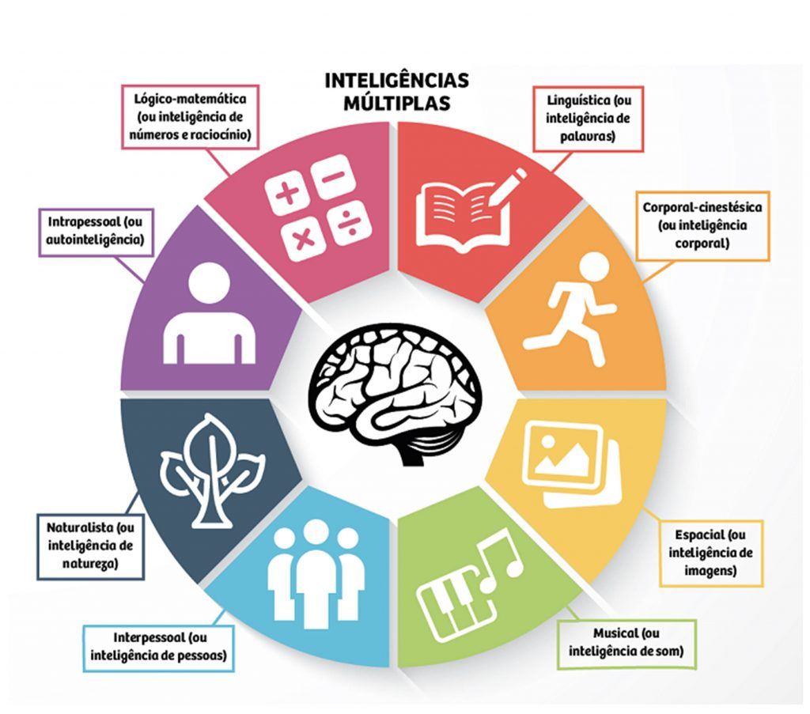

Uma aptidão é um componente de uma competência para fazer um certo tipo de trabalho em um determinado nível.
Aptidão notável pode ser considerada "talento". Uma aptidão pode ser física ou mental.
Aptidão é o potencial inato para realizar certos tipos de trabalho, sejam eles desenvolvidos ou não.
Ao contrário da ideia original de QI, aptidão freqüentemente se refere a uma das MUITAS características diferentes que podem ser independentes umas das outras, como aptidão para vôo militar, controle de tráfego aéreo ou programação de computadores.
Esta abordagem mede uma variedade de habilidades separadas, semelhantes à teoria das inteligências múltiplas.
Atualmente, em testes como QI ou testes vocacionais, a inteligência é medida principalmente com base em um único tipo de inteligência, focada em cálculos e resultados.
Porém, para os professores, é comum não conseguir alcançar todos os alunos usando um único sistema.
Muitas pessoas só conseguem aprender quando a informação é apresentada de uma maneira diferente, ou quando elas têm novas opções para se expressar.
Pode ser que alguém não consiga se comunicar tão bem usando a escrita, mas faz isso perfeitamente com alguma imagem ou desenho. Ou alguém que não consegue entender frações, até que representem isso separando laranjas em fatias, por exemplo.
Por causa desses tipos de experiência, a teoria das inteligências múltiplas chama a atenção de muitos educadores.
Essa teória foi proposta por Howard Gardner em 1983, a teoria das inteligências múltiplas revolucionou muito a forma como se entende a inteligência. Sua base está no fato de que uma abordagem única para a educação sempre deixará alguns alunos para trás.
Gardner acreditava que os testes de QI têm uma relevância limitada para a vida real e, segundo ele, pode haver até oito tipos diferentes de inteligência, que se aplicam em diversas áreas.
As afirmações feitas por Gardner são muito semelhantes às feitas sobre a inteligência emocional, outro tipo especial de inteligência que pode ser até mais importante para o sucesso na vida do que a inteligência acadêmica tradicional.
A teoria diz que existem vários tipos de inteligência humana, cada uma representando diferentes formas de processamento de informações.

Esse tipo de inteligência é mais voltado para conclusões baseadas na razão, e descreve a capacidade de resolver equações e provas, de ter pensamento lógico, detectar padrões, fazer cálculos e resolver problemas abstratos.
Por muito tempo esse foi o principal tipo utilizado para medir a inteligência de uma pessoa, através de testes de QI.
O estilo de aprendizagem que mais se encaixa nesse perfil é aquele focado nos números e na lógica. Adultos jovens com muita inteligência lógica são interessados geralmente em padrões, categorias e relacionamentos.
São atraídos por problemas de aritmética, jogos de estratégia e experimentos.
As profissões que se destacam nesse tipo de inteligência são as de engenheiro, cientista, contador, estatístico e analista.
Essa inteligência está ligada à percepção visual e espacial, à interpretação e criação de imagens visuais e à imaginação pictórica.
Ela permite que as pessoas compreendam melhor informações gráficas, como mapas.
O estilo de aprendizado está mais relacionado a imagens, gravuras, formas e espaço tridimensional.
Artista, arquiteto, fotógrafo, designer e escultor são profissões mais ligadas a esse tipo de inteligência.
A inteligência linguística se refere não apenas à capacidade oral, mas também a outras formas de expressão, como a escrita ou mesmo o gestual.
A inteligência verbo-linguística refere-se à capacidade de um indivíduo de se expressar, seja por meio da linguagem ou de gestos. Assim como a forma de analisar e interpretar ideias e informações, e produzir trabalhos envolvendo linguagem oral e escrita.
Pessoas com esse tipo de inteligência mais desenvolvido costumam ser ótimos comunicadores e oradores, e aprendem idiomas com certa facilidade.
O estilo de aprendizagem está relacionado à linguagem e às palavras.
As profissões que mais se encaixam com esse tipo de inteligência são: escritor, advogado, poeta, jornalista, redator e relações públicas.
A inteligência interpessoal reflete a capacidade de reconhecer e entender os sentimentos, motivações, desejos e intenções de outras pessoas.
Diz respeito à capacidade de se relacionar com os outros, e o estilo de aprendizado ligado a esse tipo de inteligência envolve contato humano, trabalho em equipe e comunicação.
Profissões como terapeuta, professore, psicólogo, médico, profissional de RH e político são mais relacionadas com esse tipo de inteligência.
A inteligência intrapessoal refere-se à capacidade das pessoas de reconhecerem a si mesmos, percebendo seus sentimentos, motivações e desejos.
Está ligada à capacidade de identificar seus hábitos inconscientes, transformar suas atitudes, controlar vícios e emoções.
A principal forma de aprendizado está ligada à autorreflexão.
Essa inteligência pode ser aplicada a qualquer profissão, pois diz respeito a conhecer a si mesmo.
A inteligência naturalista refere-se à capacidade de compreender o mundo natural, identificando e distinguindo entre diferentes tipos de plantas, animais e formações climáticas.
O tipo de aprendizagem relacionado com essa inteligência é aquele que se dá por meio do contato com a natureza, e as profissões relacionadas são as de biólogo, geólogo, engenheiro climático, jardineiro e meteorologista.
Apesar desse tipo de inteligência não fazer parte do estudo original de Gardner, ele decidiu inclui-lo em 1995, por ser uma inteligência essencial para a sobrevivência no futuro.
A inteligência corporal-cinestésica implica o uso do próprio corpo para resolver problemas.
Diz respeito à capacidade de controlar os movimentos corporais, ao equilíbrio, à coordenação e à expressão por meio do corpo.
As profissões mais ligadas a esse tipo de inteligência são: dançarino, ator, esportista, mergulhador, bombeiro e motorista.
O tipo de aprendizado é geralmente relacionado com a experiência física e movimento, sensações e toque.
A inteligência musical permite aos indivíduos produzir, compreender e identificar os diferentes tipos de som, reconhecendo padrões tonais e rítmicos.
O tipo de aprendizado é relacionado com músicas, ritmos e sons, e as profissões mais ligadas a esse tipo de inteligência são: músico, compositor, DJ, cantor, produtor musical e engenheiro acústico.
Um equívoco comum sobre essa teoria é a ideia de que as inteligências múltiplas significam o mesmo que aprender novas habilidades.
As inteligências múltiplas representam diferentes capacidades intelectuais.
Os estilos de aprendizagem, de acordo com Howard Gardner, são as formas pelas quais um indivíduo aborda uma série de tarefas.
Segundo Gardner, todas as pessoas têm todos os oito tipos de inteligência listadas acima, em diferentes níveis de aptidão.
E as experiências de aprendizagem não precisam necessariamente se relacionar com a área de inteligência mais forte de uma pessoa.
Por exemplo, se alguém é habilidoso em aprender novos idiomas, isso não significa necessariamente que essa pessoa prefere aprender através de palestras.
Alguém com alta inteligência visual, como um designer, pode se beneficiar do uso de imagens para se lembrar de informações
Embora ainda seja necessária uma pesquisa adicional para determinar as melhores medidas para se avaliar a inteligência das pessoas, essa teoria proporcionou a ampliação das definições que temos atualmente.
É importante que comecemos a pensar sobre as diferentes maneiras pelas quais a informação pode ser apresentada e aprendida.
Existem alguns testes que podem te ajudar a ver quais tipos de inteligência são mais relacionados contigo. Eles são uma maneira interessante de aprender sobre como alguns de nossos gostos e interesses podem influenciar na forma como percebemos as informações.
Porém, esses resultados não são destinados a rotular as pessoas como portadoras de certo tipo de inteligência e que por isso sua forma de aprendizado deverá ser sempre relacionada a ela.
Essa rotulagem cria limites e, quando se trata de aprender, devemos evitar restringir a forma como definimos nosso potencial. As pessoas têm muitas inteligências diferentes, e a força em uma área não significa fraqueza em outra.